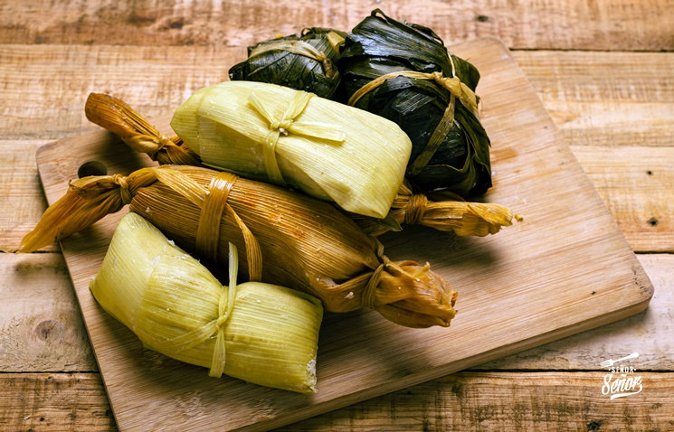

PLATO ESTRELLA MEXICANO
Recetas tamal

INGREDIENTES para 4 personas
- 1 kg de masa de maíz para tamales
- 100 gramos de manteca de cerdo
- Caldo de pollo
- Para el relleno de los tamales
- Pollo asado desmigado
- Queso rallado
ELABORACIÓN paso a paso
- 1. Comienza preparando la masa de maíz casera. En un recipiente grande, mezcla la masa de maíz con el caldo de pollo, la manteca de cerdo, el polvo de hornear y la sal. Amasa hasta obtener una masa suave y homogénea. Si es necesario, agrega más caldo de pollo para obtener la consistencia adecuada.
- 2. A continuación, prepara el relleno de tu elección. En este caso vamos a usar los restos del pollo asado que preparé, los vamos a desmenuzar y con ellos vamos a preparar unos tamales riquísimos.
- 3. Para formar los tamales, coge una hoja de plátano remojada en agua caliente, esto lo haremos para que esté más flexible y no se quiebre. Pon un poco de masa en la hoja con un poco de relleno de queso y pollo y cierra la hoja como si de un paquetito se tratase.
- 4. Envuelve la masa alrededor del relleno, doblando los bordes de la hoja para formar un paquetito rectangular. Puedes cerrar el paquete con hilo de bridar.
- 5. Una vez hechos todos los tamales, los vamos a cocinar al vapor durante 1 hora y media con la ayuda de una vaporera. Cuando se desprenda bien la masa de la hoja estará listo.
CONSEJOS PARA COMER LOS TAMALES
- Sirve los tamales calientes para disfrutar de la mejor manera de ellos.
- Acompaña los tamales con alguna salsa picante, siempre le va genial.
- Para darle un toque diferente añade queso fresco o cebolleta picada por encima.
- Los tamales también se pueden tomar en desayuno, comida o cena.